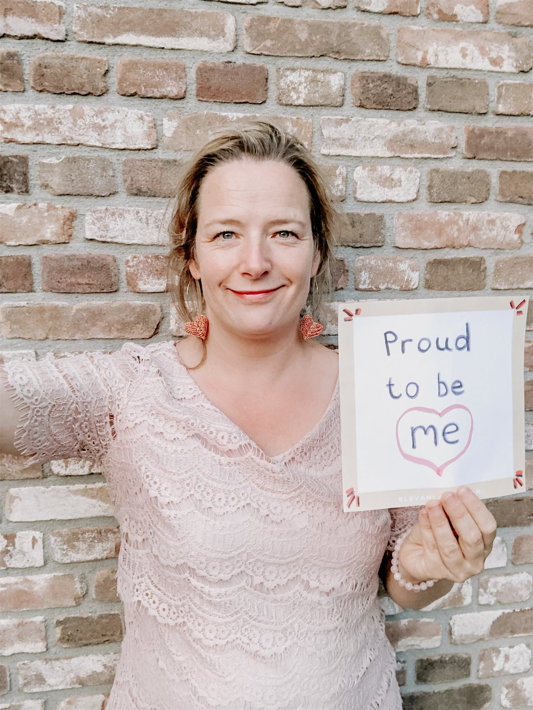

Gratis 10-weekse cursus · online via Zoom
Je weet dat er iets niet klopt. Tijd om jezelf terug te vinden.
IK GA LEVEN is een gratis cursus van 10 weken voor vrouwen die geweld of dwingende controle meemaken of hebben meegemaakt in hun relatie. Je krijgt inzicht in wat er werkelijk gebeurt, je bouwt stap voor stap je eigen keuzes weer op, en je doet dat in een kleine groep vrouwen die begrijpen wat jij doormaakt.
Zet de eerste stap →
Voor wie
Is IK GA LEVEN iets voor jou?
Iedere situatie is anders. De cursus is er voor jou als je je herkent in een of meer van deze zinnen.
- Je weet dat er iets niet goed zit in je relatie, maar je kunt er de vinger niet op leggen.
- Je vraagt je af waarom je niet weggaat, en je voelt je schuldig dat je dat niet doet.
- Je loopt op eieren, past je steeds aan en bent jezelf kwijtgeraakt.
- Je hebt het gevoel dat niemand het echt begrijpt.
- Je wilt inzicht en weer eigen keuzes, zonder dat iemand je vertelt wat je te doen staat.
- Je bent uit de relatie en wilt begrijpen wat er is gebeurd, en hoe je verdergaat.
Je hoeft niet al weg te zijn om te beginnen. Meedoen kan ook als je nog in de relatie zit, zolang je veilig online kunt deelnemen, bijvoorbeeld vanaf je werk of bij een vriendin. Meedoen betekent niet dat je weggaat of scheidt. Jij bepaalt je tempo en jij bepaalt je volgende stap.
Wat je krijgt
Tien weken, elke week een stap dichter bij jezelf
IK GA LEVEN is de Nederlandse bewerking van de Own My Life Course van Natalie Collins. Hiltje is door Collins getraind om de cursus te leiden. Je volgt de cursus in een kleine, besloten groep, en elke vrouw krijgt het IK GA LEVEN-dagboek. Dit zijn de thema's waar je doorheen gaat.
Ik leef op mijn manier
Je ontdekt op een veilige manier weer wat jíj fijn, leuk en goed vindt.
Ik leef met aandacht
Je krijgt kennis om te begrijpen wat er in jouw relatie en jouw leven speelt.
Ik leef vanuit mijn lichaam
Je leert hoe je lichaam reageert op wat je hebt meegemaakt, en hoe je daarmee om kunt gaan.
Ik leef door te kiezen
Hoe zwaar een situatie ook is, je hebt keuzes. Daar ga je mee aan de slag.
Ik leef in verbinding
Hoe wil jij zijn in je relaties met de mensen om je heen, en met je partner of ex-partner?
Ik leef in de wereld
Jouw verhaal staat niet los van de wereld om je heen. Hoe ziet die er eigenlijk uit?
Ik leef met gevoel
Voelen wat je voelt is waarschijnlijk lastig geworden. Je zet kleine stappen terug.
Iemand die geweld gebruikt, pakt ook je plezier af. Daarom staan lachen, lichtheid en sisterhood in het hart van de cursus.
Cijfers van de originele Own My Life Course in het Verenigd Koninkrijk en Ierland. De eerste Nederlandse groep van IK GA LEVEN start in september 2026.
Van "het ligt aan mij" naar "ik maak weer eigen keuzes"
Dat is de beweging die de cursus in gang zet: je stopt met de schuld dragen die niet van jou is, je neemt je eigen keuzes weer in handen, en je hoort bij een kring vrouwen die je ziet. Dit zeggen vrouwen die de cursus deden.
Wie de cursus leidt
Ontmoet Hiltje
Ik ben Hiltje. Als huisarts en als arts bij Veilig Thuis heb ik veel ervaring met geweld in afhankelijkheidsrelaties, zoals partnergeweld en kindermishandeling. Als coach begeleid ik vrouwen die ingrijpende dingen hebben meegemaakt. En ik ben de initiatiefnemer van de IK GA LEVEN-cursus: een cursus die vrouwen na geweld of misbruik helpt het te begrijpen, de regie terug te nemen en weer geluk en plezier in hun leven te vinden.
Geen oordelen en geen standaardvragen. Wel eerlijke kennis, echte ruimte en een vrouw naast je die het begrijpt.

Praktisch
Goed om te weten
Gratis
Deelname kost je niets. De cursus wordt gefinancierd via subsidie en sponsoring.
10 weken
Elke week een bijeenkomst, elke week één thema. In jouw tempo; niets moet af.
Online via Zoom
Vanaf je laptop, tablet of telefoon. Je camera en microfoon kun je op elk moment uitzetten.
Kleine, besloten groep
Vrouwen die begrijpen wat jij doormaakt. Je hoeft niets uit te leggen.
Het IK GA LEVEN-dagboek
Elke deelneemster krijgt het dagboek dat bij de cursus hoort.
Start september 2026
De eerste Nederlandse groep gaat in september van start.
Voordat je meedoet: jouw veiligheid
De cursus kan gevoelens oproepen die confronterend zijn. Dat is normaal, en het is de reden dat we je vragen even bij deze punten stil te staan.
- Voel je je veilig genoeg, emotioneel en fysiek, om de cursus te volgen?
- Kun je de sessies volgen op een plek waar hij niet bij is, bijvoorbeeld bij een vriendin of vanaf je werk?
- Als je kinderen hebt: zijn zij op school tijdens de sessie, of zorgt iemand voor hen?
- Is het veilig om je e-mailadres achter te laten? Een apart e-mailadres aanmaken kan een goede stap zijn.
Kun je nog niet op alles ja antwoorden? Laat je niet ontmoedigen. Mail naar info@ikgalevencursus.nl of bel of app naar 06 847 381 67; dan kijken we samen naar een veilige manier om mee te doen. Op de pagina Veilig meelezen lees je hoe je deze site bezoekt zonder sporen achter te laten.
Acuut gevaar? Bel altijd 112.
IK GA LEVEN CURSUS
Klaar voor een eerste stap?
Je hoeft vandaag niets te beslissen. Dit zijn de twee manieren om te beginnen, in de volgorde die voor de meeste vrouwen goed voelt.
Kom eerst naar de gratis bijeenkomst
"Zit ik in een relatie met psychisch geweld?" Twee uur online via Zoom, in een besloten groep vrouwen. Meerdere data in juli en augustus. Je hoeft niets uit te leggen en je beslist daarna zelf of de cursus iets voor je is.
Bekijk de data →Weet je al dat je in september mee wilt doen?
Laat weten dat je interesse hebt in de cursusgroep die in september 2026 start. Je zit nergens aan vast; we houden je op de hoogte en nemen persoonlijk contact met je op.
De cursus is er. De groep komt er. En jij bepaalt wanneer het jouw moment is.